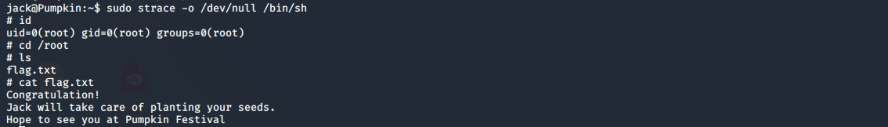

在vulnhub上找了找靶机玩玩，总体上难度不大，这里记录一下pumpkin这个系列的writeup
pumpkin garden
这个靶机直接给了ip，所以就不用arp-scan扫了
靶机ip：172.20.10.137
攻击机ip：172.20.10.135
nmap开扫
开放了21，1515，3535端口
先看21端口，有一个匿名访问，得到这个
内容是
Hello Dear!
Looking for route map to PumpkinGarden? I think jack can help you find it.
没啥东西，看http服务了，在源码里看到这个
去看图片，发现可以直接列目录
在hidden_secret下发现了一个clue.txt，base64decode之后得到账号密码
scarecrow : 5Qn@$y
直接ssh登录，成功登录
发现有个文件
尝试登录goblin的账号，成功登录
没有什么可以利用的点，继续信息搜集，在home下找到了这个
看样子是要利用这个直接提权了，然而，这网站在我访问的时候是崩的，只能搜了，看一下sudo的版本
搜exp找到了这个https://github.com/t0kx/privesc-CVE-2015-5602
1 | !/usr/bin/env bash |
在攻击机上准备好脚本，开simpleHttp，在靶机上直接wget就好了
攻击机上开启SimpleHttpServer
靶机下载并提权，中间有一步改root密码，直接把goblin的hash复制到root那里就好了
可以看到已经是root用户了，最后一步就是看flag了
pumpkin raising
靶机ip：172.20.10.138
攻击机ip：172.20.10.135
靶机一共有4个pumpkin seeds，一个root flag
nmap开扫
开放了22，80端口，直接看web服务，源码有一行
解出来是这个，没什么用
This is just to remaind you that it’s Level 2 of Mission-Pumpkin! ;)
扫目录扫到了robots.txt
然后进去随便翻翻，在hidden/note.txt里找到了这个
Robert : C@43r0VqG2=
Mark : Qn@F5zMg4T
goblin : 79675-06172-65206-17765
尝试ssh登录，失败
继续翻，找到了/seeds/seed.txt.gpg，但是没有密码，无法解密，尝试用首页上的SEEDWATERSUNLIGHT来解密，成功
在后边应该是一串莫斯电码，找个网站直接解密看看，成功解密
得到第一个pumpkin seed
YIPPEEYOAROTHRIGHPATH..BIGMAXPUMPKIEEDID69507
然后继续翻，找到了pumpkin.html，里边有一串
一看就是base家族的，最后试出来是base32，得到
/scripts/spy.pcap
下载一下，wireshark打开，follow一下tcp流，得到第二个seed
之前的pumpkin.html还有一些16进制数据
找个网站解一下，得到第三个seed
继续找，找到了underconstruction.html，在源码里看到这个
可以看到应该是个图片隐写，找到了images/jackolantern.gif，开搞
1 | stegosuite -x jackolantern.gif |
发现有密码
之前的三个账号密码还没试，试一下，试出来了密码是 Qn@F5zMg4T，得到了第四个seed
四个seed为69507，96454，50609，86568，然后就是排列组合登录jack账号了，尝试得到密码为69507506099645486568，ssh成功登录jack
但是这是个rbash，也就是受限制的shell，可以用这个命令来在ssh连接的时候得到不受限的shell
1 | ssh jack@172.20.10.138 -t "bash --noprofile" |
可以看到一切正常了
然后就是准备提权了
在这个神奇的网站上搜一下，用这个命令就可以提权了
1 | sudo strace -o /dev/null /bin/sh |
得到flag

总之这个靶机以取证隐写为主，和ctf的misc很像
pumpkin festival
靶机ip：172.20.10.139
攻击机ip：172.20.10.135
这个靶机有几个token，一个root flag
照样nmap开路
开放了21，80，6880端口
和第一个靶机一样，直接登录看文件，得到token1
PumpkinToken : 2d6dbbae84d724409606eddd9dd71265
然后看web服务，看源码，得到token2
PumpkinToken : 45d9ee7239bc6b0bb21d3f8e1c5faa52
扫目录，得到robots.txt，两个403，一个404，还有一个store/track.txt，访问得到了这个
Hey Jack!
Thanks for choosing our local store. Hope you like the services.
Tracking code : 2542 8231 6783 486-Regards
admin@pumpkins.local
这里给了域名pumpkins.local，尝试改一下hosts
这样就可以访问了
得到token3
PumpkinToken : 06c3eb12ef2389e2752335beccfb2080
wpscan开始扫
1 | wpscan --url 172.20.10.139 -e u |
得到两个用户

还有readme.html，访问得到一串K82v0SuvV1En350M0uxiXVRTmBrQIJQN78s，base家族试一波，base62，解得两个用户的密码
morse & jack : Ug0t!TrIpyJ
尝试登录，morse账号成功登录，在profile得到token4
PumpkinToken : 7139e925fd43618653e51f820bc6201b
然后尝试登录admin，这里卡了很久，后来看了wp，把整站的单词爬下来，生成字典来爆破，得到密码为Alohomora!
在post里找到了token5
PumpkinToken : f2e00edc353309b40e1aed18e18ab2c4
在setting里找到了token6
PumpkinToken : 06c3eb12ef2389e2752335beccfb2080
之后又陷入了停滞，看了wp，去搞ftp，用户为web服务index里提到的harry，使用hydra爆破
1 | hydra -l harry -e nsr -P /usr/share/wordlists/rockyou.txt ftp://172.20.10.139 |
得到密码yrrah
ftp连接
进去发现Donotopen，一路进去，找到了token.txt和data.txt，得到token7
PumpkinToken : f9c5053d01e0dfc30066476ab0f0564c
用file命令来看一下data.txt，是个压缩文件，一路解压得到了jack，里边是十六进制，找网站解一下，是一个ssh key
改个600权限直接登录就好了
1 | ssh jack@172.20.10.139 -p6880 -i jack |
然后就是提权，sudo要密码，尝试之前得到的密码，成功
看到允许pumpkins/alohomora*，所以可以自建一个文件，命名为alohomora，内容是
1 | #!/bin/bash |
这样就可以开启一个root权限的shell，至于写入，可以用echo命令
1 | echo '#!/bin/bash' > alohomora |
然后chmod +x alohomora，再sudo ./alohomora就可以成功getshell了
最后看一下flag就好了
参考：https://mzfr.github.io/vulnhub-writeups/2019-07-22-PumpkinFestival